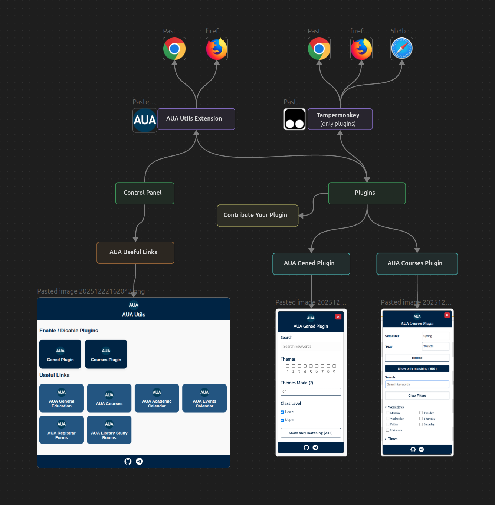
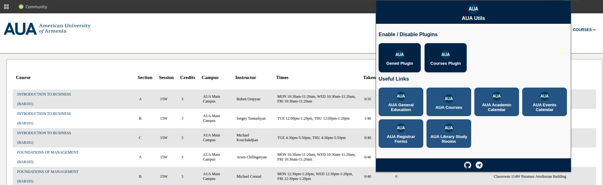
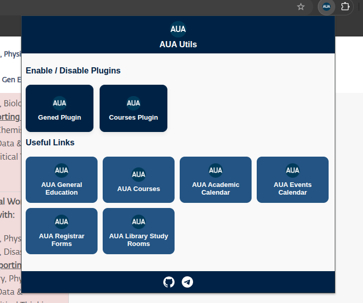
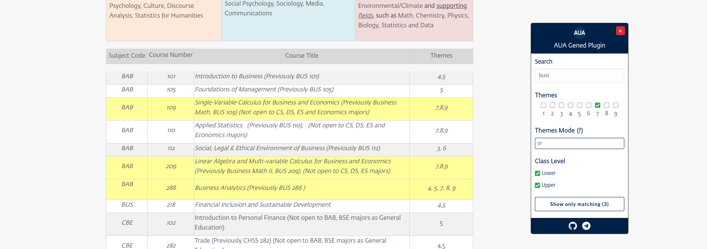
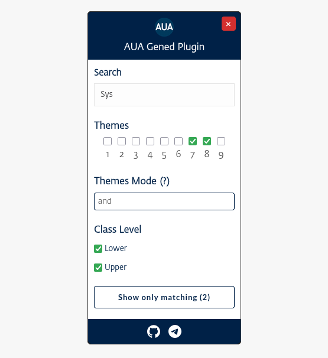
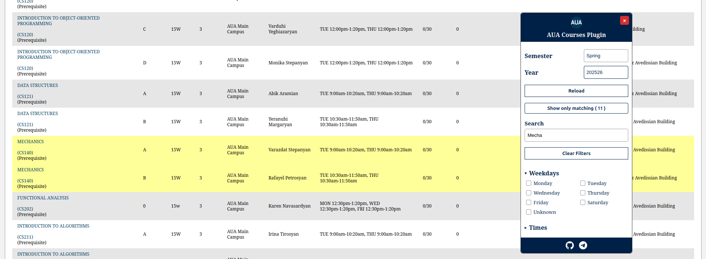
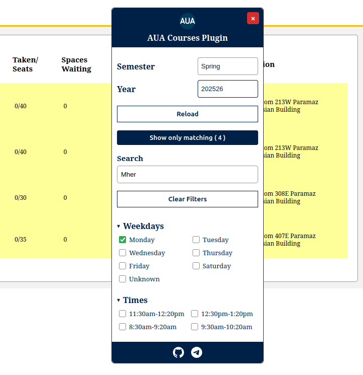
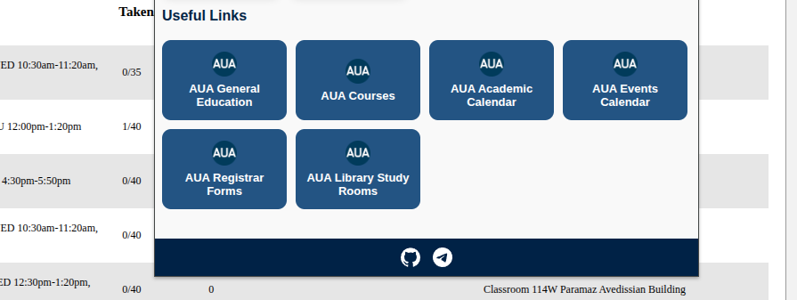

AUA Utils is a collection of minimalistic and clean utility scripts and tools designed to enhance the AUA web experience (official extension will be available soon).
Plugins are separate code blocks that can work independently of the extension. They are cross-platform and can be installed using script injection extensions such as Tampermonkey. The AUA Utils Extension provides more capabilities and functionality, but for example, on Safari you can only install the plugins using Tampermonkey because AUA Utils extension is currently available for Safari.
AUA Utils Extension is the core part of the AUA Utils project. It represents the browser-based component that delivers the plugins directly inside AUA web platforms and serves as the main interface between the user and the overall AUA Utils ecosystem.
AUA Utils Extension is the core part of the AUA Utils project. It represents the browser-based component that delivers the plugins directly inside AUA web platforms and serves as the main interface between the user and the overall AUA Utils ecosystem.
 AUA GenEd Plugin helps you find general education courses by keyword, theme, or level.
 AUA Courses Plugin helps you find and filter courses more quickly and with greater flexibility. It also includes information about general education requirements and adds a scheduling feature where you can create a calendar with multiple schedules, maintain a wishlist, and import or export calendars (compatible with Google Calendar).
 This is a small addition to the AUA Utils extension that allows quick access to frequently used links for AUA students.
File CONTRIBUTING.md loaded from the root of the codebase.